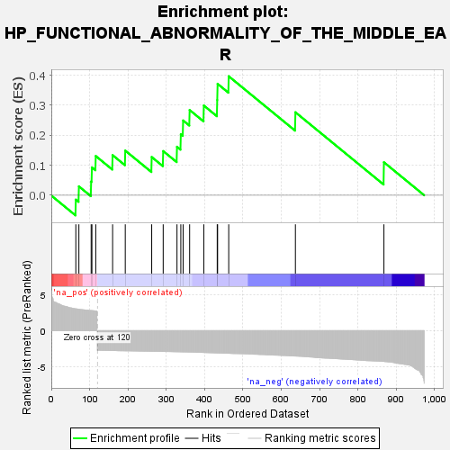
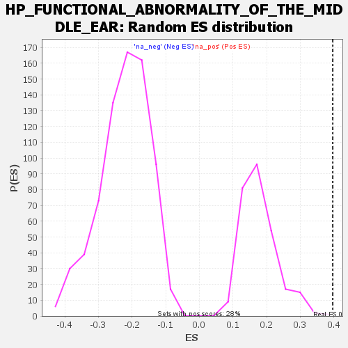

| | | Dataset | genes_ranked_stat_0.1 |
| Phenotype | NoPhenotypeAvailable |
| Upregulated in class | na_pos |
| GeneSet | HP_FUNCTIONAL_ABNORMALITY_OF_THE_MIDDLE_EAR |
| Enrichment Score (ES) | 0.3965435 |
| Normalized Enrichment Score (NES) | 2.2129462 |
| Nominal p-value | 0.0036363637 |
| FDR q-value | 0.6664159 |
| FWER p-Value | 0.27 |
Table: GSEA Results Summary

Fig 1: Enrichment plot: HP_FUNCTIONAL_ABNORMALITY_OF_THE_MIDDLE_EAR
Profile of the Running ES Score & Positions of GeneSet Members on the Rank Ordered List
| SYMBOL | RANK IN GENE LIST | RANK METRIC SCORE | RUNNING ES | CORE ENRICHMENT | | 1 | MASP1 | 64 | 3.025 | -0.0146 | Yes |
| 2 | PDGFRA | 72 | 2.971 | 0.0295 | Yes |
| 3 | EPAS1 | 104 | 2.793 | 0.0455 | Yes |
| 4 | IFT88 | 106 | 2.791 | 0.0928 | Yes |
| 5 | RPE65 | 116 | 2.732 | 0.1307 | Yes |
| 6 | MEOX1 | 160 | -2.766 | 0.1336 | Yes |
| 7 | ENPP1 | 193 | -2.806 | 0.1488 | Yes |
| 8 | EDNRA | 262 | -2.873 | 0.1273 | Yes |
| 9 | RET | 292 | -2.897 | 0.1472 | Yes |
| 10 | LRRC56 | 328 | -2.938 | 0.1614 | Yes |
| 11 | DVL1 | 338 | -2.951 | 0.2032 | Yes |
| 12 | OSTM1 | 344 | -2.958 | 0.2492 | Yes |
| 13 | RSPH9 | 361 | -2.977 | 0.2840 | Yes |
| 14 | COL1A2 | 398 | -3.040 | 0.2990 | Yes |
| 15 | GJB2 | 433 | -3.109 | 0.3173 | Yes |
| 16 | IQSEC2 | 434 | -3.113 | 0.3712 | Yes |
| 17 | CCNO | 463 | -3.154 | 0.3965 | Yes |
| 18 | ANKH | 637 | -3.532 | 0.2766 | No |
| 19 | P4HA2 | 868 | -4.282 | 0.1099 | No |
Table: GSEA details [plain text format]

Fig 2: HP_FUNCTIONAL_ABNORMALITY_OF_THE_MIDDLE_EAR: Random ES distribution
Gene set null distribution of ES for HP_FUNCTIONAL_ABNORMALITY_OF_THE_MIDDLE_EAR